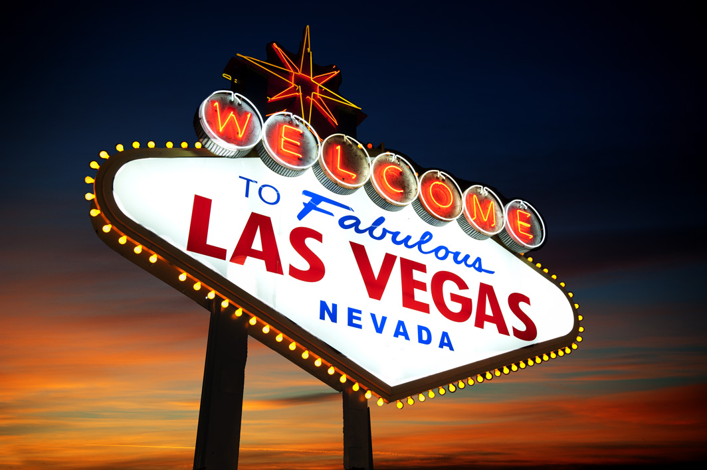
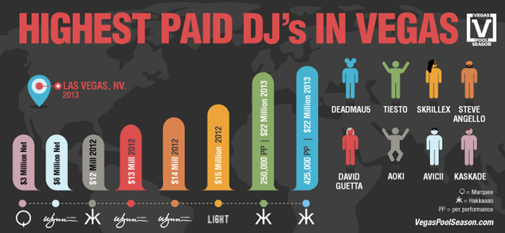

Las Vegas 2013: Cultural Force, or Shaky Behemoth?
{kind=link}

Las Vegas’s status as a glitzy EDM hub was already locked in place by the middle of 2012. The biggest edition yet of the Electric Daisy Carnival drew in over 300,000 attendees to the Las Vegas Speedway across three nights; a milestone moment in US dance culture. It was the investment of some of Sin City’s biggest casinos into dance culture that represented an unwavering commitment: The Cosmopolitan with its Marquee Nightclub and Dayclub, The Wynn and its portfolio of venues that includes XS, Encore Beach Club, Tryst and Surrender.
This year though, the stakes were upped considerably; April saw the entrance of two new major players into the fold; Hakkasan at the MGM Grand Casino and LIGHT at the Mandalay Bay. It signaled part of a shift that has seen crowds returning to Vegas again after the financial crisis, with the city expecting its largest influx of tourists this year at an estimated 40 million visitors. Gambling revenues are falling accounting for just 36% of the revenue on the Strip in 2012, as opposed to 59% in 1984. The exploding nightclub market has been a means for the city to reinvent itself.
“...In Las Vegas, the opportunities for this music are endless...”
The entry of the new players this year was also greeted by a whirlwind of media attention over the alleged “bidding war” that took place, as a posse of dance music’s most successful stadium fillers were recruited as residents. US financial publication Forbes has been particularly forthcoming with often unbelievable figures; Hakkasan succeeded in convincing Tiësto to abandon his long-running residency in Ibiza, and Forbes reported in August that he’s taking away an incredible $250,000 per show. He’s joined by Scottish hitmaker Calvin Harris at an alleged $300,000 a show, while Deadmau5 was reported to have jumped ship from Wynn over to Hakkasan for an astronomical $425,000 per show.
{kind=link}

- from Vegaspoolseason.com
Others decided to stay at their exisiting posts, in spite of the enticing offers from new players. “I got offered almost double,” Dutch heavyweight Afrojack, one of the headline residents of XS Club at Wynn Casino told Forbes; his loyalty was suitably encouraged though by a healthy raise from his current employer. “With Hakkasan coming, they blew it up… It’s insane.”
They’re the sort of numbers that coincide with Vegas’ reputation for flashy excess and overindulgence; a laser-lit EDM variation on the faux Eiffel Towers, coliseums and exploding volcanoes already populating the main strip. In August though, Marquee resident and US house veteran Kaskade came out with a claim that was so outlandish, it could almost be true. Branding Vegas as an “unlikely hero” of dance culture, he argued it had “accidentally” become “the most fertile and nurturing home that Electronic Music has seen in the past two decades”.
Conceding that Vegas “screams fake everything,” and it has historically been, “a feeding trough for the overindulgent American and the gaudy world traveler,” he also check listed a host of reasons why it’s developed into a genuine cultural hub for electronic music. Amazing lighting and sound (“music sounds better in Vegas. It just does”), and a dance-loving audience drawn both locally and abroad, which he claims has cultivated an environment where DJs are granted the luxury of creatively stretching their legs, and newcomers given room to grow in style.A new world of possibilities?
The sentiments were echoed this year by the range of high-profile residents who had put down their roots in Sin City. DJBroadcast spoke to Afrojack and, via his typically goofy persona, he shed some light on why Vegas might be gaining an edge over Ibiza; affordability.
“The reason it’s glitzy and glamorous is because it’s Vegas,” he said of its reputation. “It is almost like a next generation of Ibiza, only in a different way. The thing is, the hotel rooms are cheap, the tickets are cheap. A ticket in Ibiza is 60 Euros, while a ticket in Vegas is only $30.”
Hakkasan newcomer Tiësto is also one of Vegas’s loudest supporters. More than willing to turn his back on Ibiza, he stated “Europe is a little bit behind in dance music. We’ve seen it all, and it’s all been done”.
“It’s not just about the money…. I don’t even need that money. It’s a new generation out there, dance music is blowing up big and it’s a new culture.”
The flipside of all this positivity is that it’s coming from the DJs who are best positioned to financially benefit from the changes going on; there are others who saw it differently. Swedish titan Eric Prydz was one of many who packed up and moved to the US this year, starting his Black Dice residency with the Wynn Casino in an attempt to offer something a little different.
“I can't speak for Las Vegas as a whole, but XS and Surrender where we we did Black Dice are actually amazing night clubs, and I like the contrast between my music and the glitz and glam of the city. I don't really see it as a place that will take dance music culture to new heights”.
Swedish hitmaker Avicii was one of the more commercially lucrative voices who wasn’t as quick to exit his Ibiza residency. At the IMS conference in the opening week of the season in May, when queried on Vegas posing a cultural threat to the White Isle, answered with a flat “no”.
“A lot of Americans would like to think that it is. It’s similar in the sense that you get a massive amount of people, and you have a different crowd of people there every week. And the most amazing lineups, but that’s because it’s Vegas, and they have a shit-tonne of money because of the casinos. They’re the only ones that are able to have those kinds of lineups, besides Ibiza. It’s similar in some respects, but vibe wise it’s completely different.”
His observation was that Ibiza’s edge came from the extensive history of dance on the island; something that’s a work in progress in Vegas. “Here you have the culture of decades of this music, while it’s been around and big for just a few years in Vegas. So that’s the big difference.”Ripples out to the industry
At this year’s Amsterdam Dance Event (ADE), SFX Entertainment head of acquisitions Shelly Finkel entered into the debate.
“A little disappointing is Las Vegas”, said Finkel. “They are paying artists a lot of money because they receive their income in ways we don’t. Their business model is different because they also gain income out of their hotels and casinos, money that is being invested in the EDM scene by paying the DJs twice or three times as much compared to SFX."
However, Finkel claims he has the higher moral ground over the Vegas behemoths. “Artists come to me and say: ‘I will play in Vegas to make money, I will play at your events for the fans’.”
Finkel’s comments are a common refrain that has been ringing out regularly since last year’s ADE, when ID&T co-founder Duncan Stutterheim complained his festivals are now competing with Las Vegas casinos for talent, who were basically in a position to offer DJs a blank cheque.
“What’s happening now is that the agents are being total pricks. They are coming to us and saying, our DJs are being paid $250,000 for a night. This is the kind of money they are asking for, and then at the same time, we have events like Mysteryland and Tomorrowland, where we’re also looking to book these acts. So we’re competing now with casinos.”
"...I wish someone would just drop a bomb on Vegas...” - Richie McNeil
The claims of market destablisation is something that’s being heard as far away as the festival market in Australia; in early December at the Electronic Music Conference in Sydney, promoter of the Stereosonic festival tour Richie McNeil (recently welcomed into the SFX fold) claimed the already notoriously sky-high cost of touring acts through the Australian market was being sent even further skywards by what was going on in Sin City.
“We feel [at Stereosonic] that prices are going up for acts because of Vegas. I wish someone would just drop a bomb on Vegas,” McNeil said in his typically blunt style.
"...There are only so many Hardwells, there are only so many Tiëstos....” - James Algate
While Vegas is being set up as the scapegoat for the rising performance costs of the industry, one insider who begs to differ is Hakkasan’s James Algate; formerly behind the UK’s Global Gathering brand of festivals as CEO of Angel Music Group, in January this year he relocated to Las Vegas to help steer the MGM Grand Casino’s $130 million investment into dance culture. Speaking on a panel at Amsterdam Dance Event this year, he fought back against the claims that Vegas is solely responsible for skyrocketing DJ fees.
“It’s supply and demand… If you don’t pay the money, you’re not going to get them,” Algate told the audience on the Global Club Culture panel. “I don’t think that Las Vegas is skewing things, I think it’s because global demand has created this successful ‘brand’ or industry, and there are only so many Hardwells, there are only so many Tiëstos.”
“All of the press about Las Vegas fees should be taken with a pinch of salt. Half of it isn’t true, and the other half was written before the club was even opened.”
Hakkasan speaks out
Algate spoke with DJBroadcast in late November, primarily in response to the assertions put forth by Finkel from SFX at ADE; that Hakkasan was operating from a skewed business model due to revenue from its MGM Grand Casino parent. Algate says this assumption is false.
“At Hakkasan, we’re solitary with ownership. We’re very much based on a model of profit and loss for the venue as a whole, and not anything to do with revenue from gambling, hotel rooms, incidental charges or anything else that might be attributed to the running of other venues in Las Vegas. We operate very much on the basis that whatever we book in, we need to make money off it. As a business, as Hakkasan, that’s what we concentrate on.”
"...You work on an offers-based policy with agents, and ultimately they’re role in this is to extract as much money as possible..."
Algate reemphasized that misconceptions on DJ fees were being perpetuated by the likes of Forbes and beyond, classing them as “woefully incorrect”; while declining to go into specifics. However, he did confirm that the bidding war was more than a media construction.
“This is probably the most competitive market in the world. Yes, there is a bidding war, just like there is for any act going into any city in the US or worldwide between various people vying for that artist. You work on an offers-based policy with agents, and ultimately they’re role in this is to extract as much money as possible. They understand there are varying factors; is it worth taking a lot of money for one show, or taking a smaller fee with increased marketing, or instead a larger number of shows that add up to a bigger aggregate fee?” he told DJ Broadcast.
Algate does say that to a degree, Vegas is on an island out on its own in terms of being a unique market. “It’s probably the tip of everything, purely because it’s a 52 weeks of the year business. It’s not like the Ibiza season that only runs for 16 weeks a year, it’s certainly not like a festival market where it might be the only play of a DJ for that particular place for a year”.
Boom or bust? Bubbling away alongside all the jubilation in the industry over the unprecedented new business opportunities, is the nagging fear that it’s all going to be fleeting, with EDM destined for a GFC-style crash that’s just around the corner.
A lot of the discussion seems intertwined with dance music’s general antipathy towards the more commercial side of the culture, and how out of touch it’s perceived to be with the core values of the scene. Michaelangelo Matos’ Strictly Business: The Economics of EDM feature in Do Androids Dance in September reflected a sentiment that is vigilantly on the lookout for signs of the impending EDM apocalypse.
“There’s long been a backlash inherent in the EDM craze; the music’s funkless exuberance is the most blankly formulaic pop style in ages, and the culture’s gushing-over-thinking worldview is unsustainable at any level. No one rides a long serotonin high without crashing into the dirt eventually”. If that’s indeed the case, it’s a crash that will leave Vegas particularly susceptible.
"...We’re experiencing is the end of the guitar and the beginning of the laptop..." - Matthew Adell
The true believers though insist dance’s status as America’s ruling subculture is unquestionably here to stay. Beatport CEO Matthew Adell paints it as an unmistakable cultural shift.
“I don’t think this is a bubble,” Adell said at ADE, alongside Algate on the Global Clubbing Culture panel. “I think what we’re experiencing is the end of the guitar and the beginning of the laptop as the most important creative tool in the world for young people”.
Scene true believer Tommie Sunshine, present in dance culture since cutting his teeth on the Midwest rave scene of the late 80s, expressed his own impassioned view in a recent editorial for inthemix, tellingly titled Why the EDM Haters Have Got it All Wrong.
“Right now we’re hearing a lot of people pontificating about the ‘EDM bubble bursting’, while at the same time Armin van Buuren just had a radio hit in America,” he said. “This wave is so far from breaking on the shore, it’s ridiculous… You’re looking at something that has swooped in and has posed a palpable contest against what has been the Holy Trinity of American music for decades — that is, rock ‘n roll, hip hop and country music”.
"...If and when it does end, the kids will just stop going, they won't tell us first...!” - Bob Lefsetz
Algate’s experience with the Global Gathering brand goes back to the festival’s first event in 2001, and he says he’s keenly aware of the cyclical nature of the music industry.
“Dance music has been around for a significant amount of time now. Yes, it seems that at the moment it’s the hottest thing on everybody’s lips, certainly stateside. But this has been happening around the world for the past 25 years. Yes, there will be patterns that come from the UK and Europe, on how trends move from big shows, back into clubs, and then to arenas, it’s a cyclical process. Not only for the size of shows, but also for the styles of music that are popular”.
“From our side though, we’re backing electronic music and will continue to do so, because we’re hugely successful with it. We will probably see like with any business, the strongest will survive and the people who continue to invest, the people who continue to amend and improve the experience for their customers, will be the ones that survive. The guys that don’t move with the times, and don’t reinvest, will be the ones who don’t do so well”.
Ultimately, the question of dance music’s longevity as a cultural force in the US is one that’s impossible to answer. DJBroadcast spoke to US music industry blogger Bob Lefsetz; an ex-lawyer and record company executive famous for his outspoken, to-the-point observations, and he says while even the biggest insiders are fearful the scene could contract to what it once was, what happens now, and whether there is a bust, is anybody’s guess.
“No one knows! But I'll tell you one thing, the insiders, business and industry will be the last to know. If and when it does end, the kids will just stop going, they won't tell us first!”The culture can wait
While Kaskade’s notion of Vegas as the “unlikely hero” of dance music is a nice idea, it appears the reality is still a far way off. In a SPIN editorial, veteran music journalist Philip Sherburne took down Kaskade’s claims, blow by blow.
“Those international crowds? That a rotating door filling the clubs with weekend warriors would equate to ‘a place where a DJ can stretch out and push the boundaries’ just doesn't make sense,” he said. “And the club owners, for their part, are interested only in maximizing profit. If a DJ takes too many risks and clears the floor, the cash registers at the bar stop ringing…. And as for that ‘previously unimaginable training ground for the up-and-comers to cut their teeth in style’ - which up-and-comers are we talking about, exactly? Vegas doesn't do up-and-comers”.
Ultimately, even Algate concedes that Vegas is far from a vibrant breeding ground for underground culture. An interesting contrast was spotlighted at ADE when he spoke alongside veteran New York promoter Nicolas Matar, responsible for the widely-discussed new Output club that was modeled on Berghain in Berlin, with a music policy to match.
“A DJ that plays at Output, he’d get booed off stage and have drinks thrown at him if he played at Hakasaan,” said Algate. “That crowd needs the high energy, they come to Las Vegas because they want to have a good time and be entertained. They don’t want to have to listen to half an hour of deep house. We’ve tried. I would love to do that, but it doesn’t work”.
Algate emphasised to DJBroadcast that pure entertainment will remain the focus at Hakkasan for the foreseeable future.
“People come to Vegas, they book their travel and they book their hotels, they understand where they want to go, and they go there to be entertained. And they want to be entertained by the most popular music. People don’t come to Vegas to spend three hours in a dark room listening to a kick drum."